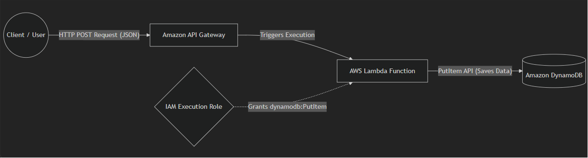

Projects / Project 03
Serverless event-driven API
An HTTP endpoint that accepts JSON and stores it in a database, with no servers, provisioned, tested and destroyed entirely from the command line.
The problem
I wanted to see how a request becomes stored data on a fully managed stack, and to practise doing it without the console, so that every resource, permission and teardown step was explicit and scriptable.
Architecture

How I built it
- Created the ContactMessages DynamoDB table (partition key MessageId).
- Created an execution role with the minimum permissions: write to that table and write logs.
- Wrote the Lambda handler with boto3: parse the JSON body, generate a timestamp ID, PutItem. Zipped and deployed it with aws lambda update-function-code.
- Created an HTTP API in API Gateway v2 and pointed it at the function.
- Granted API Gateway permission to invoke the function, scoped to one API.
- Tested with curl, verified the row with a DynamoDB scan, then ran a teardown script that removed every resource.
# Test request (API id and account removed) $ curl -X POST https://<api-id>.execute-api.us-east-1.amazonaws.com \ -H "Content-Type: application/json" \ -d '{"name": "Test", "message": "Hello from the CLI"}' "Success! Your message was saved by a Cloud Engineer."
Engineering decisions
Resource-based policy scoped to one API
Creating an API does not authorise it to call Lambda. I used aws lambda add-permission with an explicit --source-arn (my account, region and API) so no other API Gateway can trigger the function, which prevents the confused-deputy problem.
Defensive input handling
The handler checks for a missing body and returns 400 Bad Request instead of crashing with a 500.
Scan now, query later
A scan is fine for a tiny table; at real scale I would add a global secondary index and use query to keep reads cheap.
Teardown as a first-class step
A script detaches the policy, deletes the role, API, function and table so the project leaves a zero cost footprint.
Issues I hit and fixed
Console blocked by local firewall
Cause: my network or antivirus blocked a CDN the Lambda console needed ("Failed to fetch").
Fix: switched to AWS CloudShell, which runs inside AWS, and scripted everything in Bash.
Handler crashed with KeyError: 'body'
Cause: a browser sent a GET, which has no payload.
Fix: validated the event and returned a clean 400, logging the raw event for debugging.
DynamoDB rejected my query on Name
Cause: Name is a reserved word.
Fix: used expression attribute names and values (#nameKey, :nameValue), which also keeps data separate from the expression.
Limitations
A self-directed lab: no authentication on the endpoint, no input schema validation beyond the body check, and no live endpoint is published. The CLI-only approach was deliberate for learning; the later projects replace it with Terraform.